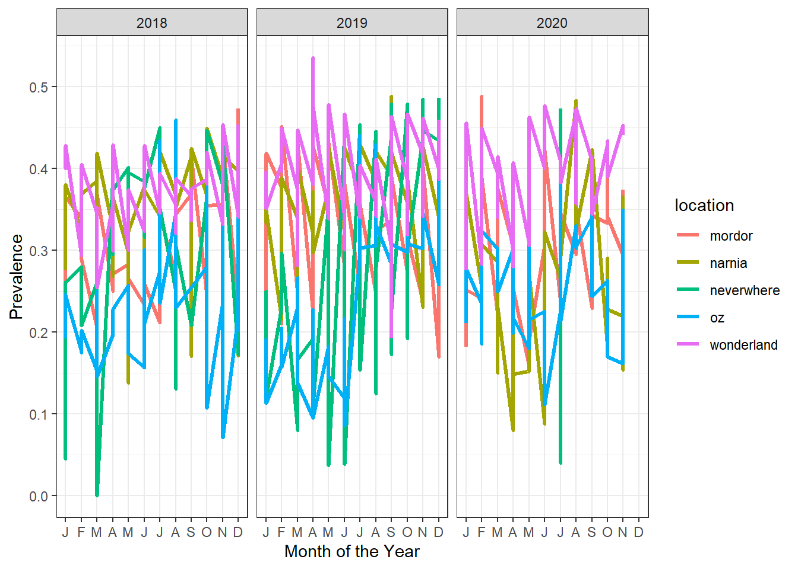
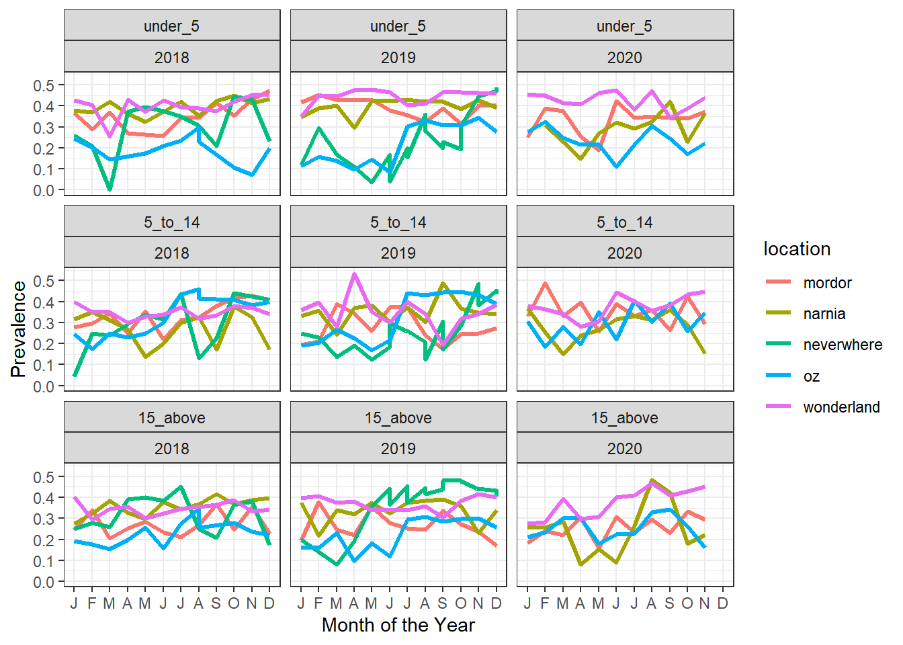
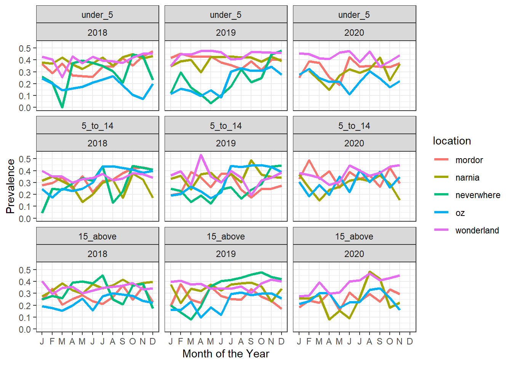
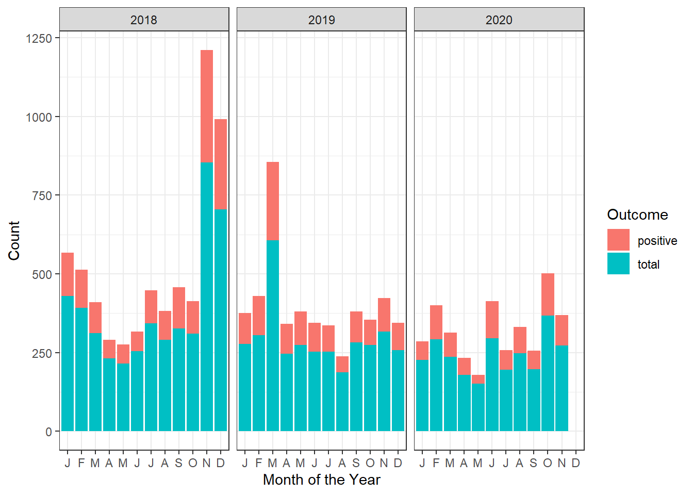
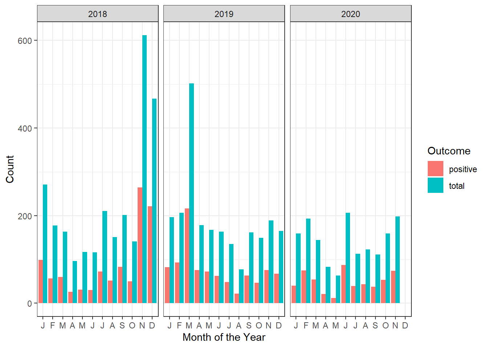
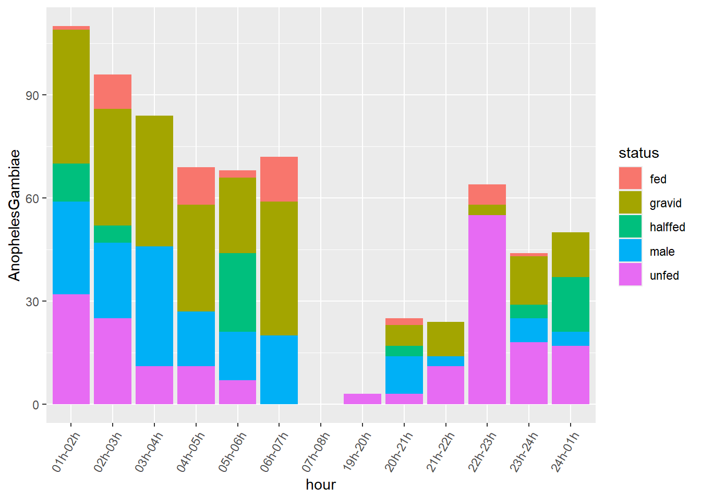
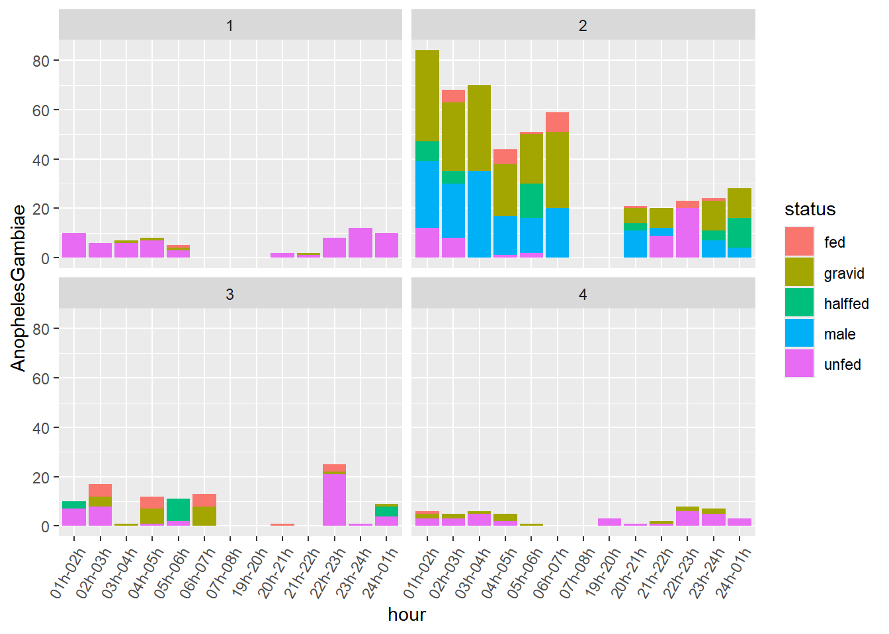
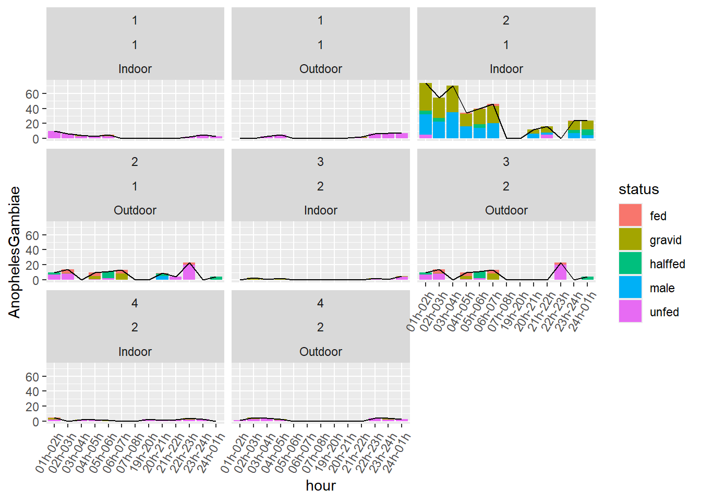

# load packages
library(tidyverse)Introduction
What do we mean with data wrangling?
The Cambridge dictionary gives several meanings to the verb wrangle:
to argue with someone about something, especially for a long time
to take care of, control, or move animals, especially large animals such as cows or horses (mainly American English)
to move a person or thing somewhere, usually with difficulty or using force
to take care of or deal with something, usually when this is difficult
Data Wrangling
By data wrangling, we mean here the process of checking and correcting quality and integrity of data relevant to malaria modeling, prior to any further analysis. This is also known as data validation.
Data validation involves checking various aspects of your dataset, such as missing values, data types, outliers, and adherence to specific rules or constraints.
Validating our data helps maintain its quality and integrity, ensuring that any analyses or decisions made based on the data are robust and reliable.
Why Validate Data?
Ensure Data Integrity: Validating data helps identify and rectify errors, ensuring the integrity of the dataset.
Improve Analysis Accuracy: Clean and validated data leads to more accurate analysis and modeling results.
Compliance and Standards: Data validation ensures that the data conforms to predefined rules, standards, or regulatory requirements.
Error Prevention: Early detection of errors can prevent downstream issues and save time in troubleshooting.
Getting Started
Before you begin, you might want to create a new project in RStudio. This can be done by clicking on the “New Project” button in the upper right corner of the RStudio window. You can then name the project and choose a directory to save it in.
Next, we will load the tidyverse package. This package provides a set of useful functions for data manipulation and visualization. We will use the ggplot2 package to create plots in the later section of this tutorial.
Next, let’s download the two example datasets we will use in this tutorial. These are available in the AMMnet Hackathon GitHub repository.
I suggest creating a data folder inside your R project, then we can download the two example datasets so that they are saved to your computer.
# Create a data folder
dir.create("data")
# Download example data
url <- "https://raw.githubusercontent.com/AMMnet/AMMnet-Hackathon/main/02_data-wrangle/data/"
download.file(paste0(url, "mockdata_cases1.csv"), destfile = "data/mockdata_cases1.csv")
download.file(paste0(url, "mosq_mock1.csv"), destfile = "data/mosq_mock1.csv")
# Load example data
data_cases <- read_csv("data/mockdata_cases1.csv")
mosq_data <- read_csv("data/mosq_mock1.csv")The two datasets we will use are mockdata_cases1.csv and mosq_mock1.csv, which are mock example datasets that should be similar to malaria case surveillance and mosquito field collection data, respectively. In the following sections we will use the mockdata_cases1.csv and mosq_mock1.csv to introduce concepts of data cleaning and characterization in R.
1. Check the data for potential errors
Prevalence is a fraction defined in [0,1]
Note: Prevalence of 0 or 1 while not statistically erroneous, need checking for accuracy.
What observations have errors?
# Erroneous values for prevalence
data_cases%>%
dplyr::filter(prev <= 0 | prev >= 1)# A tibble: 3 × 10
location month year ages total positive xcoord ycoord prev time_order_loc
<chr> <dbl> <dbl> <chr> <dbl> <dbl> <dbl> <dbl> <dbl> <dbl>
1 mordor 4 2018 15_a… 91 23 -20.0 30.5 25.3 4
2 neverwh… 2 2019 15_a… 22 -1 -20.8 29.6 -0.0455 14
3 neverwh… 3 2018 unde… 25 0 -19.8 30.2 0 3Comment: We have two rows with nonsensical prev data 25.3and -0.455, and one row with zero prev at a given month.
Defensive programming
Note: The use of “::” enables us to call a function from a specific R package I have had instances where if “stats” base R package was called first, the filter function if not specified with the R package fails.
# Erroneous values for prevalence
data_cases%>%
stats::filter(prev < 0 | prev > 1) We correct the two prevalence by re-calculating
Good practice to leave the original data intact (advantage of R over Stata)
# Update erroneous values for prevalence
data_prev <- data_cases%>%
dplyr::mutate(prev_updated=positive/total)We have a case erroneously reported with a negative value.
What are your options?
Never delete data
Query and have data management team make the necessary investigations and make a correction
data_prev%>%
dplyr::filter(prev_updated <= 0 | prev_updated >= 1)# A tibble: 2 × 11
location month year ages total positive xcoord ycoord prev time_order_loc
<chr> <dbl> <dbl> <chr> <dbl> <dbl> <dbl> <dbl> <dbl> <dbl>
1 neverwh… 2 2019 15_a… 22 -1 -20.8 29.6 -0.0455 14
2 neverwh… 3 2018 unde… 25 0 -19.8 30.2 0 3
# ℹ 1 more variable: prev_updated <dbl>For now (in order to proceed with this demo), we drop the problematic observation.
Why is this not working?
# Filter erroneous values for prevalence, wrong way
data_use <- data_prev%>%
dplyr::filter (prev_updated >= 0 | prev_updated <= 1)Why is this working?
# Filter erroneous values for prevalence
data_use <- data_prev%>%
dplyr::filter (prev_updated >= 0 )%>%
dplyr::filter (prev_updated <= 1)
data_use%>%
dplyr::filter(prev_updated <= 0 | prev_updated >= 1)# A tibble: 1 × 11
location month year ages total positive xcoord ycoord prev time_order_loc
<chr> <dbl> <dbl> <chr> <dbl> <dbl> <dbl> <dbl> <dbl> <dbl>
1 neverwhere 3 2018 unde… 25 0 -19.8 30.2 0 3
# ℹ 1 more variable: prev_updated <dbl>Schemas
To prevent nonsensical data appearing in your data, you should define a schema that comes along with your recorded data. A schema is a document that states rules for data types and values or ranges to be expected in a particular column of your data frame.
E.g. for prevalence, we know that this should be a real number between zero and one.
The R package validate can be used to create a schema for your data frame:
# Filter erroneous values for prevalence
library(validate)
schema <- validate::validator(prev >= 0,
prev <= 1,
positive >= 0)
out <- validate::confront(data_cases, schema)
summary(out) name items passes fails nNA error warning expression
1 V1 514 513 1 0 FALSE FALSE prev - 0 >= -1e-08
2 V2 514 513 1 0 FALSE FALSE prev - 1 <= 1e-08
3 V3 514 513 1 0 FALSE FALSE positive - 0 >= -1e-08Using the schema for the columns prev and positive, we could have readily detected the three problematic entries. For more details, you can have a look into the vignette of the validate package.
Note: Next time when you receive data from your collaborators, you might want to ask them for the associated schema file (e.g. YAML format). Good luck!
2. Look at summary statistics
Summary stats by location (across all time points)
# Summary statistics
data_use%>%
dplyr::group_by(location)%>%
dplyr::summarise(nobs=n(),
mean_prev=mean(prev_updated),
min_prev=min(prev_updated),
max_prev=max(prev_updated))# A tibble: 5 × 5
location nobs mean_prev min_prev max_prev
<chr> <int> <dbl> <dbl> <dbl>
1 mordor 105 0.314 0.158 0.488
2 narnia 104 0.326 0.08 0.488
3 neverwhere 95 0.301 0 0.486
4 oz 104 0.255 0.0714 0.459
5 wonderland 105 0.382 0.194 0.535Summary stats by location and year (across all time points)
Table getting longer. Might be too cumbersome to add checks by month and age group Note: point of query - why just had 3 measurements in 2020?
# Summary statistics by location
data_use%>%
dplyr::group_by(location, year)%>%
dplyr::summarise(nobs=n(),
mean_prev=mean(prev_updated),
min_prev=min(prev_updated),
max_prev=max(prev_updated))# A tibble: 15 × 6
# Groups: location [5]
location year nobs mean_prev min_prev max_prev
<chr> <dbl> <int> <dbl> <dbl> <dbl>
1 mordor 2018 36 0.318 0.206 0.473
2 mordor 2019 36 0.313 0.170 0.451
3 mordor 2020 33 0.312 0.158 0.488
4 narnia 2018 36 0.340 0.138 0.449
5 narnia 2019 36 0.361 0.216 0.488
6 narnia 2020 32 0.270 0.08 0.483
7 neverwhere 2018 36 0.304 0 0.45
8 neverwhere 2019 56 0.298 0.0370 0.486
9 neverwhere 2020 3 0.307 0.04 0.473
10 oz 2018 35 0.252 0.0714 0.459
11 oz 2019 36 0.254 0.0861 0.446
12 oz 2020 33 0.260 0.112 0.405
13 wonderland 2018 36 0.365 0.255 0.454
14 wonderland 2019 36 0.388 0.194 0.535
15 wonderland 2020 33 0.393 0.276 0.476
Challenge 1: Explore the
data_prev and data_use datasets
- Create a table showing the number of data entries per age group and location for each of them!
- Which age group and location have observations removed?
Slightly more advanced. Use of lists (not scope of the course but there is a point here).
# Summary statistics by location
data_use_list <- data_use%>%
dplyr::group_split(location)Or use the purrr library:
# Summary statistics by location, map summary function
library(purrr)
data_use_age_summary <- purrr::map(.x=seq(length(data_use_list)),
.f=function(x){
data_use_list[[x]]%>%
dplyr::group_by(location,year,ages)%>%
dplyr::summarise(nobs=n(),
mean_prev=mean(prev_updated),
min_prev=min(prev_updated),
max_prev=max(prev_updated))
})Now let’s focus on the first list object (mordor)
We know pregnant mothers, children <5 are most vulnerable.
Output (ages) isn’t ordered as we would want (chronologically).
# Summary statistics by location
data_mordor <- data_use_age_summary[[1]]
data_mordor# A tibble: 9 × 7
# Groups: location, year [3]
location year ages nobs mean_prev min_prev max_prev
<chr> <dbl> <chr> <int> <dbl> <dbl> <dbl>
1 mordor 2018 15_above 12 0.270 0.206 0.369
2 mordor 2018 5_to_14 12 0.335 0.219 0.427
3 mordor 2018 under_5 12 0.348 0.259 0.473
4 mordor 2019 15_above 12 0.266 0.170 0.377
5 mordor 2019 5_to_14 12 0.278 0.176 0.390
6 mordor 2019 under_5 12 0.394 0.315 0.451
7 mordor 2020 15_above 11 0.255 0.158 0.333
8 mordor 2020 5_to_14 11 0.352 0.258 0.488
9 mordor 2020 under_5 11 0.330 0.190 0.422How to proceed?
# Summary statistics with age groups
age_order <- c("under_5","5_to_14","15_above")
data_use_ordered <- data_use
data_use_ordered$age_group <- factor(data_use$ages, levels =age_order)
data_mordor_reordered <- data_use_ordered%>%
dplyr::group_by(location, year,age_group)%>%
dplyr::summarise(nobs=n(),
mean_prev=mean(prev_updated),
min_prev=min(prev_updated),
max_prev=max(prev_updated))%>%
dplyr::filter(location=="mordor")Let’s compare the two
# Compare for Mordor
data_mordor# A tibble: 9 × 7
# Groups: location, year [3]
location year ages nobs mean_prev min_prev max_prev
<chr> <dbl> <chr> <int> <dbl> <dbl> <dbl>
1 mordor 2018 15_above 12 0.270 0.206 0.369
2 mordor 2018 5_to_14 12 0.335 0.219 0.427
3 mordor 2018 under_5 12 0.348 0.259 0.473
4 mordor 2019 15_above 12 0.266 0.170 0.377
5 mordor 2019 5_to_14 12 0.278 0.176 0.390
6 mordor 2019 under_5 12 0.394 0.315 0.451
7 mordor 2020 15_above 11 0.255 0.158 0.333
8 mordor 2020 5_to_14 11 0.352 0.258 0.488
9 mordor 2020 under_5 11 0.330 0.190 0.422data_mordor_reordered# A tibble: 9 × 7
# Groups: location, year [3]
location year age_group nobs mean_prev min_prev max_prev
<chr> <dbl> <fct> <int> <dbl> <dbl> <dbl>
1 mordor 2018 under_5 12 0.348 0.259 0.473
2 mordor 2018 5_to_14 12 0.335 0.219 0.427
3 mordor 2018 15_above 12 0.270 0.206 0.369
4 mordor 2019 under_5 12 0.394 0.315 0.451
5 mordor 2019 5_to_14 12 0.278 0.176 0.390
6 mordor 2019 15_above 12 0.266 0.170 0.377
7 mordor 2020 under_5 11 0.330 0.190 0.422
8 mordor 2020 5_to_14 11 0.352 0.258 0.488
9 mordor 2020 15_above 11 0.255 0.158 0.3333. Use of graphs
We need to assess the evolution of prevalence for all regions by month
#Plotting evolution over time
evolution_plot <- ggplot2::ggplot(data=data_use_ordered,
mapping=aes(x=month,
y=prev_updated,
group=location,
colour=location))+
ggplot2::geom_line(lwd=1.1)+
ggplot2::facet_wrap(~year)+
ggplot2::theme_bw()+
ggplot2::xlab("Month of the Year")+
ggplot2::ylab("Prevalence")+
ggplot2::scale_x_discrete(limits=factor(1:12),
labels=c("J","F","M",
"A","M","J",
"J","A","S",
"O","N","D"))+
ggplot2::scale_y_continuous(breaks=seq(from=0,
to=0.7,
by=0.1))
evolution_plot
Observation: Prevalence graph with vertical lines per month and year, means we have several subgroups for prevalence data, we plot facets for levels of age_group
#Plotting evolution over time, fix 1
evolution_plot_ages <- ggplot2::ggplot(data=data_use_ordered,
mapping=aes(x=month,
y=prev_updated,
group=location,
colour=location))+
ggplot2::geom_line(lwd=1.1)+
ggplot2::facet_wrap(age_group~year)+
ggplot2::theme_bw()+
ggplot2::xlab("Month of the Year")+
ggplot2::ylab("Prevalence")+
ggplot2::scale_x_discrete(limits=factor(1:12),
labels=c("J","F","M",
"A","M","J",
"J","A","S",
"O","N","D"))+
ggplot2::scale_y_continuous(breaks=seq(from=0,
to=0.7,
by=0.1))
evolution_plot_ages
Observation: Some improvements, but we still have vertical lines, maybe we have other group variables. Let’s only look at those rows that have more than one entry per location, month, year, age_group
#Plotting evolution over time, fix 2
data_use_ordered%>%
group_by(location,month,year,age_group)%>%
tally()%>%
filter(n>1)%>%
left_join(data_use_ordered)# A tibble: 48 × 13
# Groups: location, month, year [8]
location month year age_group n ages total positive xcoord ycoord
<chr> <dbl> <dbl> <fct> <int> <chr> <dbl> <dbl> <dbl> <dbl>
1 neverwhere 6 2019 under_5 2 under_5 24 4 -20.6 30.7
2 neverwhere 6 2019 under_5 2 under_5 26 1 -20.5 30.7
3 neverwhere 6 2019 5_to_14 2 5_to_14 27 5 -19.7 30.0
4 neverwhere 6 2019 5_to_14 2 5_to_14 27 8 -19.3 30.2
5 neverwhere 6 2019 15_above 2 15_above 70 31 -19.4 29.4
6 neverwhere 6 2019 15_above 2 15_above 74 27 -19.2 29.2
7 neverwhere 7 2019 under_5 2 under_5 25 5 -20.0 29.1
8 neverwhere 7 2019 under_5 2 under_5 26 4 -20.7 28.6
9 neverwhere 7 2019 5_to_14 2 5_to_14 27 7 -18.8 29.3
10 neverwhere 7 2019 5_to_14 2 5_to_14 23 6 -20.4 29.8
# ℹ 38 more rows
# ℹ 3 more variables: prev <dbl>, time_order_loc <dbl>, prev_updated <dbl>Observation: OK, we see that within one location there are several prevalence data points, they differ by the xcoord and ycoord. In order to plot by location, we could average across xcoord and ycoord witin each location; maybe those are duplicated recordings, since xcoord and ycoord are very close?
#Plotting evolution over time, fix 3
data_use_ordered%>%
group_by(location,month,year,age_group)%>%
summarize(prev_updated_mean=mean(prev_updated),
prev_updated_min=min(prev_updated),
prev_updated_max=max(prev_updated))%>%
ggplot2::ggplot(mapping=aes(x=month,
y=prev_updated_mean,
file=location,
group=location,
colour=location))+
ggplot2::geom_line(lwd=1.1)+
ggplot2::facet_wrap(age_group~year)+
ggplot2::theme_bw()+
ggplot2::xlab("Month of the Year")+
ggplot2::ylab("Prevalence")+
ggplot2::scale_x_discrete(limits=factor(1:12),
labels=c("J","F","M",
"A","M","J",
"J","A","S",
"O","N","D"))+
ggplot2::scale_y_continuous(breaks=seq(from=0,
to=0.7,
by=0.1))
Observation: Prevalence widely variable throughout they year across the locations on average, wonderland affected by high prevalence while oz has the lowest prevalence
Need to check (not just prevalence) but count of cases and total vulnerable
#Check case count
data_use_ordered_long <- tidyr::pivot_longer(data=data_use_ordered,
cols=c("positive","total"),
names_to="Outcome",
values_to="counts")
mordor_stacked_bar_graph <- ggplot2::ggplot(data=data_use_ordered_long%>%
dplyr::filter(location=="mordor"),
mapping=aes(x=month,
y=counts,
fill=Outcome))+
ggplot2::scale_x_discrete(limits=factor(1:12),
labels=c("J","F","M",
"A","M","J",
"J","A","S",
"O","N","D"))+
ggplot2::geom_bar(position="stack", stat="identity")+
ggplot2::facet_wrap(~year)+
ggplot2::theme_bw()+
ggplot2::xlab("Month of the Year")+
ggplot2::ylab("Count")
mordor_stacked_bar_graph
Observation: Stacked bar graph adds positive and total counts, better to show them side by side as positive counts are a subset of the total counts. This is a specified by the argument position="dodge" in the geom_bar geometry of ggplot2.
#Case count, bargraph dodge
mordor_dodged_bar_graph <- ggplot2::ggplot(data=data_use_ordered_long%>%
dplyr::filter(location=="mordor"),
mapping=aes(x=month,
y=counts,
fill=Outcome))+
ggplot2::scale_x_discrete(limits=factor(1:12),
labels=c("J","F","M",
"A","M","J",
"J","A","S",
"O","N","D"))+
ggplot2::geom_bar(position="dodge", stat="identity")+
ggplot2::facet_wrap(~year)+
ggplot2::theme_bw()+
ggplot2::xlab("Month of the Year")+
ggplot2::ylab("Count")
mordor_dodged_bar_graph
The mosquito data set
Let’s take a look at the mosq_datadataset.
We check the sanity of this data set by displaying a table of recorded values per column:
mosq_data %>%
map( function(x) table(x) )$session
x
1 2
52 52
$Village
x
naernia narnia
2 102
$Compound.ID
x
1 2 3 4
26 26 26 26
$Method
x
ALC HLC
1 103
$Location
x
Indoor Outdoor
52 52
$hour
x
01h-02h 02h-03h 03h-04h 04h-05h 05h-06h 06h-07h 07h-08h 19h-20h 20h-21h 21h-22h
8 8 8 8 8 8 8 8 8 8
22h-23h 23h-24h 24h-01h
8 8 8
$ag.Male
x
0 3 4 5 6 7 14 16 20 22 27 35
93 1 1 1 1 1 1 1 1 1 1 1
$Ag.unfed
x
0 1 2 3 4 5 6 7 8 10 20
57 13 7 8 4 4 2 4 2 1 2
$Ag.halffed
x
0 3 4 5 8 9
92 3 3 3 1 2
$Ag.fed
x
0 1 3 5
88 7 3 6
$Ag.grsgr
x
0 1 2 3 4 6 8 12 17 20 23 27 35 37
70 13 6 1 2 1 3 2 1 1 1 1 1 1
$tot.gamb
x
0 1 2 3 4 5 6 7 8 9 10 11 12 13 14 23
40 10 10 9 8 6 3 2 1 1 5 2 1 2 2 2
$Culex.male
x
0
104
$Culex.female
x
0 1 2
94 9 1
$Mansonia.male
x
0 1
103 1
$Mansonia.female
x
0 1 2
90 11 3
$Aedes.male
x
0
104
$Aedes.female
x
0 1 2
98 5 1 Looks like we have some typos in the names for Method and Village.
Challenge 2: Using schemas for the mosquito data set
- Create a schema that provides rules for the strings (i.e. words) to be expected in the columns
MethodandVillage. - Use the syntax from here
schema <- validate::validator(Method%in%c("HLC"),
Village%in%c("narnia"))
out <- validate::confront(mosq_data, schema)
summary(out) name items passes fails nNA error warning expression
1 V1 104 103 1 0 FALSE FALSE Method %vin% c("HLC")
2 V2 104 102 2 0 FALSE FALSE Village %vin% c("narnia")The columns Village and Method seem to have some data entry errors. We need to correct for that.
mosq_data<-mosq_data%>%
mutate(Method=ifelse(Method=="ALC","HLC",Method),
Village=ifelse(Village=="naernia","narnia",Village))It looks like the several columns concern Anopheles Gambiae population sizes. Let’s change the column names using rename from the tidyverse package.
mosq_data%>%
rename("AnophelesGambiae.male"="ag.Male",
"AnophelesGambiae.unfed"="Ag.unfed",
"AnophelesGambiae.halffed"="Ag.halffed",
"AnophelesGambiae.fed"="Ag.fed",
"AnophelesGambiae.gravid"="Ag.grsgr")->mosq_dataSeems like the tot.gamb should count the the total number of Anopheles Gambiae populations. Let’s check:
mosq_data%>%
mutate(AnophelesGambiae_total=AnophelesGambiae.male+AnophelesGambiae.unfed+AnophelesGambiae.halffed+AnophelesGambiae.fed+AnophelesGambiae.gravid)->mosq_data
mosq_data%>%
filter(AnophelesGambiae_total!=tot.gamb)%>%select(AnophelesGambiae_total,tot.gamb)# A tibble: 11 × 2
AnophelesGambiae_total tot.gamb
<dbl> <dbl>
1 12 0
2 16 2
3 0 6
4 24 8
5 24 1
6 74 12
7 54 3
8 70 1
9 34 2
10 40 2
11 46 0OK, so 11 out of 104 rows have this discrepancy. Let’s keep rather Anopheles.total, since it was calculated from the data.
Since the status of the Anopheles is mutually exclusive in the HLC data, we can draw a stacked bar chart, with the bar color defined by the status. To produce such a graph efficiently in ggplot2, we need to pivot the table.
Here in particular we want to switch from a wide format to a long format table in order to obtain a column describing the status of the Anopheles mosquitoes. We will use in particular the names_separgument of the pivot_longer function to separate e.g. the column name AnophelesGambiae.male and use maleas level in a new column called status. The same goes for other column names.
Setting the grouping variable to session, Village, Compound.ID, Method, Location, hour, AnophelesGambiae_total will help to keep those variables in the long format table.
mosq_data%>%
group_by(session,Village,Compound.ID,Method,Location,hour,AnophelesGambiae_total)%>%
select(contains("AnophelesGambiae."))%>%
pivot_longer(cols=contains("AnophelesGambiae."),names_sep="AnophelesGambiae.",names_to=c(NA,"status"),values_to = "AnophelesGambiae")->mosq_data_gamb_wide
mosq_data_gamb_wide%>%
ggplot()+
geom_bar(aes(x=hour,y=AnophelesGambiae,fill=status),position="stack",stat="identity")+
scale_x_discrete(guide = guide_axis(angle = 60))
Observation: We had several values for Compound.ID. The geom_bar geometry is automatically adding them up in the graph. We can use facet_wrapto see those strata:
mosq_data_gamb_wide%>%
ggplot()+
geom_bar(aes(x=hour,y=AnophelesGambiae,fill=status),position="stack",stat="identity")+
scale_x_discrete(guide = guide_axis(angle = 60))+
facet_wrap(~Compound.ID)
On we can also use our variable Anopheles_total and plot is as a line graph on top of the bar graph:
mosq_data_gamb_wide%>%
mutate(grouping=paste0(Compound.ID,Location,session))%>%
ggplot()+
geom_bar(aes(x=hour,y=AnophelesGambiae,fill=status),position="stack",stat="identity")+
geom_line(aes(x=hour,y=AnophelesGambiae_total,group=grouping))+
scale_x_discrete(guide = guide_axis(angle = 60))+
facet_wrap(~Compound.ID+session+Location)